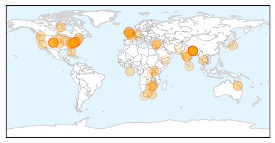
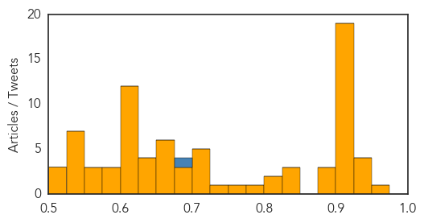
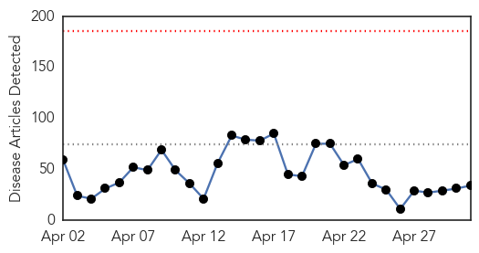
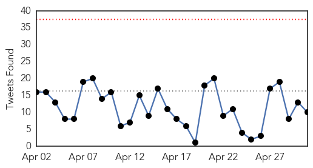

Unknown
30-Day Web Trend
0 alerts, 0 warnings

30-Day Twitter Trend
2 alerts, 0 warnings

Article Locations

Article Confidences
Top Articles:
- 0.964
- Gonorrhea counts climb 40 percent in Washington in 2014
- 0.937
- VDH identifies illness sweeping through Cold Harbor Elementary
- 0.936
- Disease outbreak threatens Nepal's earthquake survivors
- 0.934
- Casey wants funding increased for Lyme disease surveillance
- 0.933
- Diphtheria breathes again
- 0.917
- Chicago Tribune
- 0.917
- Chicago Tribune
- 0.917
- Chicago Tribune
- 0.917
- Chicago Tribune
- 0.917
- Chicago Tribune
- 0.917
- Chicago Tribune
- 0.917
- Chicago Tribune
- 0.917
- Chicago Tribune
- 0.917
- Chicago Tribune
- 0.917
- Chicago Tribune
- 0.917
- Chicago Tribune
- 0.917
- Chicago Tribune
- 0.917
- Chicago Tribune
- 0.917
- Chicago Tribune
- 0.917
- Chicago Tribune
- 0.913
- WHO issues rapid health assessment on impact of Nepal earthquake - Nepal
- 0.911
- Maasdam Undergoing Thorough Sanitizing Following Gastrointestinal Outbreak
- 0.910
- The world windows to Thailand
- 0.901
- Disease outbreak threatens Nepal's earthquake survivors
- 0.892
- Nepal: WHO issues rapid health assessment on impact of Nepal earthquake
- 0.885
- WHO issues rapid health assessment on impact of Nepal earthquake
- 0.875
- Doctor confirms rotavirus infected dozens of Hanover students
- 0.849
- A Colorado pit bull infected humans with the plague
- 0.839
- Investigational MenB vaccine can protect individuals in outbreak
- 0.828
- Senator calls for action to address Lyme disease
- 0.811
- CDC reports first U.S. transmission of plague from dog to human
- 0.804
- Alabama rot: Dog owners put on alert over flesh-eating disease
- 0.788
- Townsville Hospital records second highest rate of deadly staph in state
- 0.770
- Dog owners warned over spread of flesh-eating disease Alabama Rot
- 0.725
- Parents warned of ‘vomiting and diarrhea’ illness sweeping school
- 0.722
- Outbreak Of Plague In Colorado Spread By A Dog, 4 Affected
- 0.719
- Noroviruses may spread through the air
- 0.719
- UN relief chief appeals for continued support to Nepal - Xinhua
- 0.706
- 9th International Conference on Typhoid, Invasive NTS Disease Held in Bali, Indonesia
- 0.701
- LankaWeb – Chronic Kidney Disease in Rajarata, Prevention and Eradication:- The Way Forward
- 0.697
- Key facts about the Nepal quake
- 0.690
- Al-Ahram Weekly
- 0.685
- WHO issues rapid health assessment on impact of Nepal earthquake
- 0.669
- Major insurer launches premium reduction initiatives
- 0.667
- TOO MUCH FLUORIDE IN WATER, FEDS SAY
- 0.666
- Gift of the Givers to partner with hospital near Kathmandu
- 0.659
- UN and partners appeal for $415 million to aid quake-stricken Nepal [EN/NE] - Nepal
- 0.651
- UK’s Cameron wins TV debate as polls predict election deadlock
- 0.651
- Nepal quake toll passes 6,100 as officials gauge ‘unprecedented’ damage
- 0.648
- Healthline’s Chief Medical Officer Among the Doctors Helping Earthquake Victims in Nepal
Showing top 50 articles...
Top Tweets:
- 0.687
- Public hlth themes: globalization intersection public health/health care hierarchy of interventions obsession re numerators/denominators.
Ebola
30-Day Web Trend
0 alerts, 0 warnings

30-Day Twitter Trend
0 alerts, 0 warnings

Article Locations

Article Confidences

Top Articles:
- 1.000
- US Shuts Ebola Treatment Center in Liberia
- 1.000
- Ebola research: Fever not a surefire sign of infection
- 0.999
- Post-Ebola syndrome mystery
- 0.999
- Ebola Survivors Should Use Condoms Indefinitely, CDC Says
- 0.999
- Ebola may increase cases of malaria
- 0.997
- Ending Ebola before rainy season imperative says new acting head of UNMEER
- 0.997
- UN says ending Ebola before rainy season imperative - Xinhua
- 0.997
- Report: 5 months after infection, man spreads Ebola via sex - MyNorthwest
- 0.996
- U.S.-built Ebola unit decommissioned in Liberia as virus crisis ends
- 0.994
- Medical Unit for Health Workers Decommissioned
- 0.993
- Tarrant County Resident Tests Negative For Ebola « CBS Dallas
- 0.992
- Ellen hails US Ebola support
- 0.983
- US shuts down Ebola treatment center in Liberia
- 0.982
- Liberia burials key in Ebola fight
- 0.969
- “Sierra Leone Will Bounce Back From Ebola”...President Koroma vows
- 0.967
- UNESCO, Chinese school tech fund helps Liberia recover from Ebola - CIO India News on
- 0.966
- Anxiety Builds over ‘Magic Day’
- 0.960
- Tarrant County Resident Tests Negative for Ebola
- 0.960
- US decommissions Monrovia medical unit
- 0.945
- WHO Regional Director for Africa Dr Matshidiso Moeti concludes her visit to Liberia - WHO
- 0.919
- Welcome to the Expotimes News
- 0.905
- Back to School After the Ebola Outbreak
- 0.905
- My life as an Ebola vaccine guinea pig
- 0.903
- CONHNOL distributes mosquito nets
- 0.886
- Casey wants more tracking of Lyme disease in Pa.
- 0.816
- Another Indiana congressman warns of immigrant Ebola risk
- 0.803
- Tourists abandon Ghana despite its successes against Ebola
- 0.743
- 1.8 million School kits boost learning for children in Sierra Leone
- 0.737
- Ambassador Nyenabo Urges Colleagues to Push Africa’s Interests
- 0.713
- When Ebola Outbreaks Are Just A Part of the Job
- 0.704
- Pres. Sirleaf meets U.S. Surgeon General and delegation
- 0.657
- Leocem in Hot Waters
- 0.656
- For non-compliance of labour laws… Lawmakers Frown at Airtel
- 0.589
- Sam Sumana Deleted From APC
Top Tweets:
- 0.834
- Health Care Equity Needed To Fight Ebola - Health Affairs (blog) http://t.co/VZPDCvDTTx ebola EVD
- 0.775
- A New Zealand nurse who developed Ebola-like symptoms after returning from Sierra Leone has tested negative for Ebola http://t.co/v0IIDpNkF6
- 0.649
- CDC Cautions against Unprotected Sex with Ebola Survivors - Scientific American http://t.co/bk5RKzBKSs ebola EVD
- 0.638
- Ebola travel ban wasn't necessary after all - MSNBC http://t.co/x3R7zIPF7v ebola EVD
- 0.623
- For the second consecutive week no new Ebola health worker infections were reported in the week to 26 April. EbolaResponse
- 0.577
- 'I invented the “bubble” used to transport Ebola patients by plane' - Financial Times http://t.co/IxYg42MpM2 ebola EVD
- 0.576
- WHO approves Ebola test reagent developed by Chinese firm - Economic Times http://t.co/IqKa3m2IWl ebola EVD
- 0.543
- Report: 5 months after infection man spreads Ebola via sex - Fresno Bee http://t.co/8A0VO9yRKT ebola EVD
- 0.505
- My life as an Ebola vaccine guinea pig - The Independent http://t.co/3XxiIy8S8i ebola EVD
- 0.504
- Dallas Morning News revisits Ebola crisis and Baptist church's embrace of ... - GetReligion (blog) http://t.co/F3FnpRPH0q ebola EVD